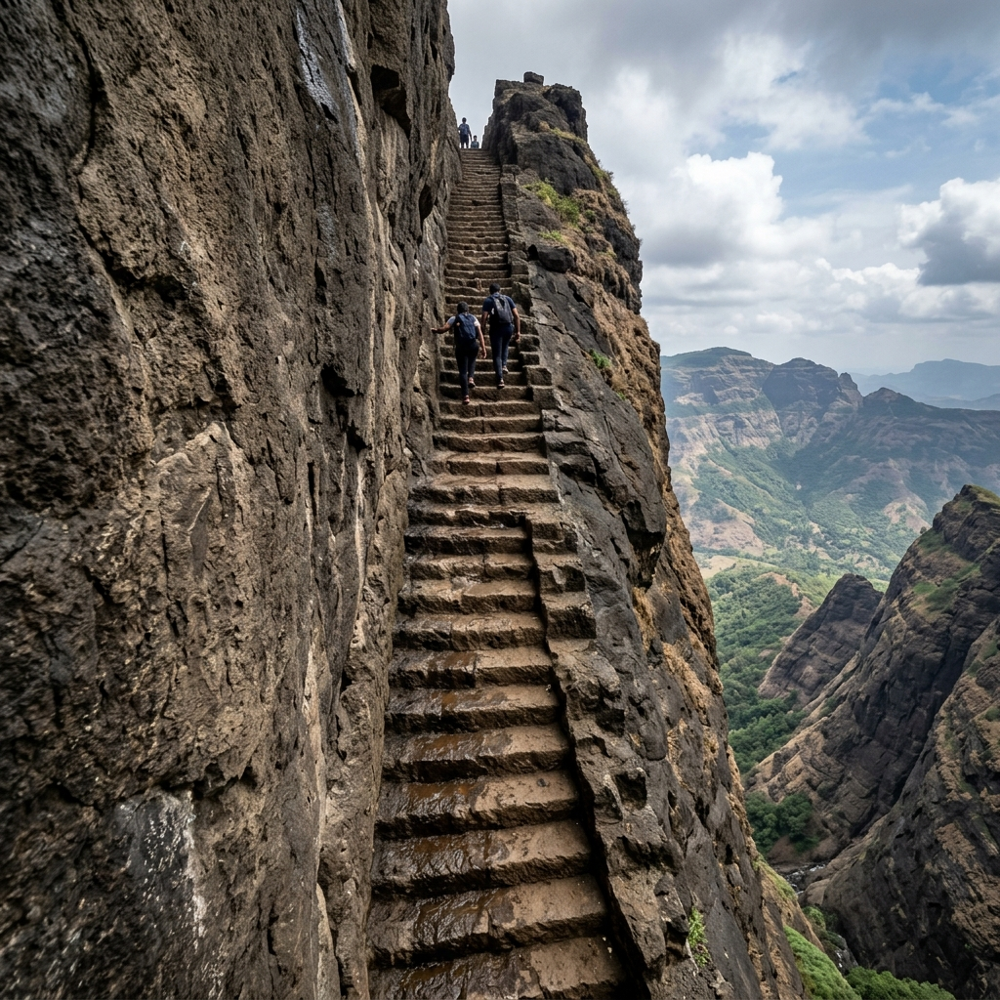
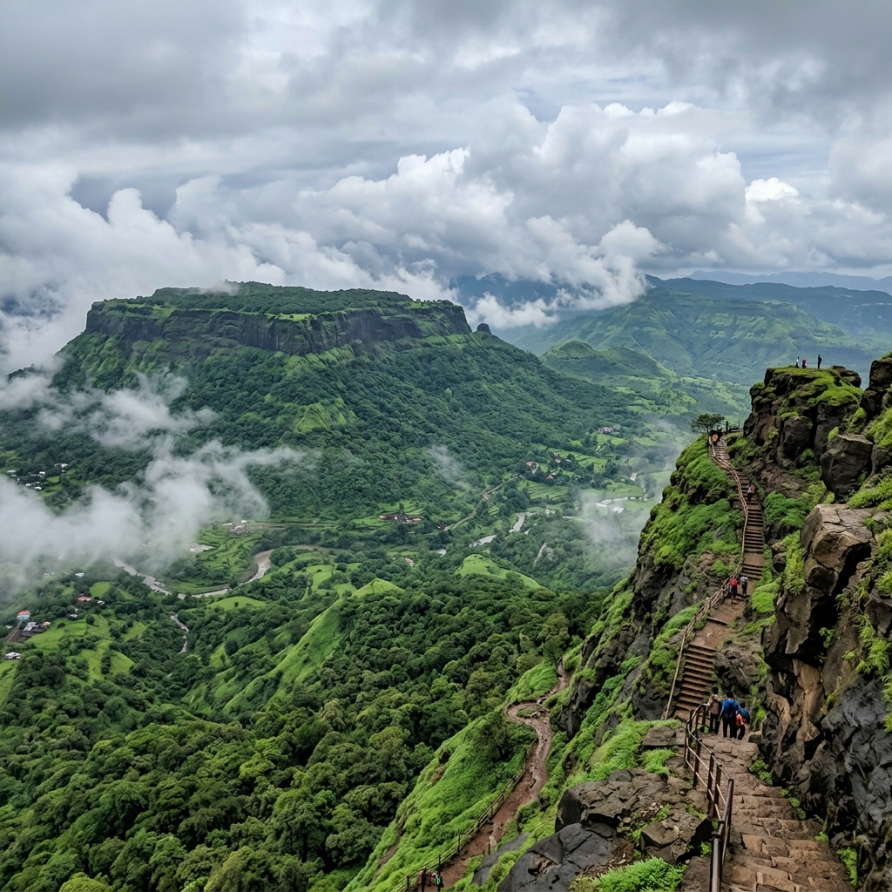
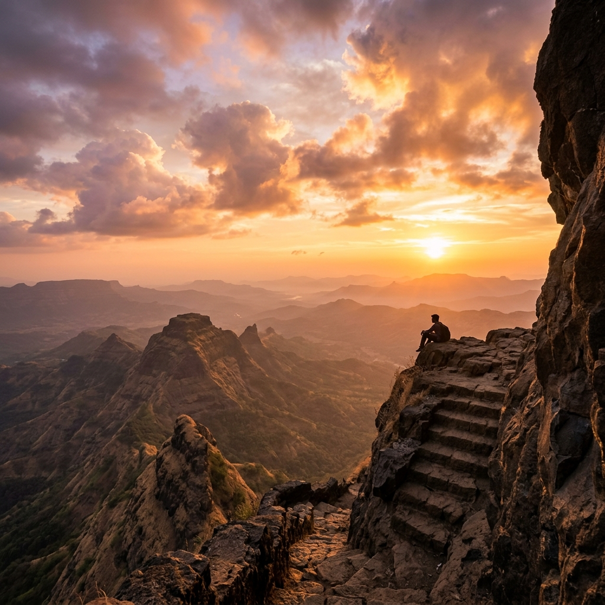
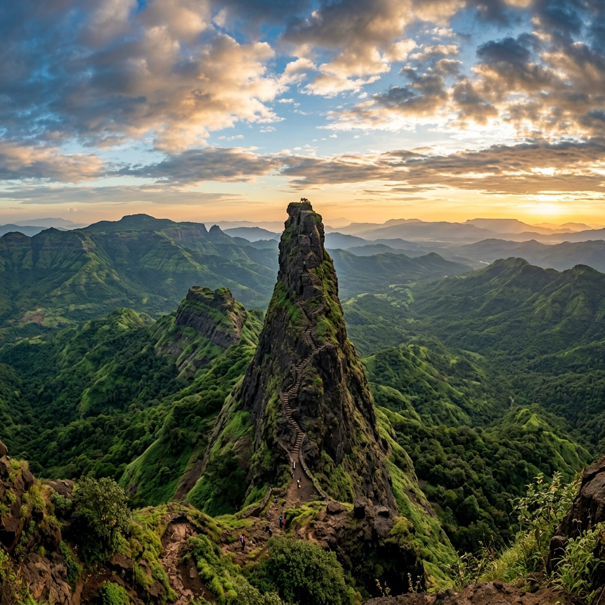

About Durg
Kalavantin Durg is one of the most thrilling and dangerous treks in Maharashtra, located near Panvel. It is famous for its steep rock-cut steps without railings and offers breathtaking views of the Sahyadri ranges.
Rising to an altitude of 685 meters, it is situated adjacent to Prabalgad Fort. The trek attracts climbers from all over seeking the ultimate adrenaline rush on its legendary stone-cut stairs.
Type
Pinnacle Trek
Access
Panvel Route

Major Attractions
Explore the highlights of this breathtaking and historic pinnacle climb.




Travel Guide
Comprehensive routes to reach the fort from Mumbai.
Option 1: Rail & Local Transit
Take a local train on the Harbor Line from Mumbai to Panvel Station (~1–1.5 hrs). From Panvel, board a state transport (ST) bus or hire a local auto to Thakurwadi base village (~17 km).
Cost: ₹150 – ₹300 ApproxOption 2: Direct Drive
Drive ~55 km from Mumbai via the Sion-Panvel Expressway and NH 48 directly to Thakurwadi base village. Safe paid parking is available at the trailhead.
Cost: ₹600 – ₹1200 ApproxOption 3: Pinnacle Climb
Begin the trek from Thakurwadi village. Hike ~3 km (2–3 hours) up to the Prabalmachi plateau, and then proceed to climb the thrilling vertical rock-cut staircase to the summit.
Essential Information
Everything you need to know for a smooth adventure.
Stay & Food
Local homestays and camping sites are available on the Prabalmachi plateau. Basic Maharashtrian meals and snacks are served by local villagers at the base and plateau.
Essentials
Sturdy trekking shoes with high grip, gloves for holding rocky walls, a torch for early descents, a raincoat (in monsoon), a first aid kit, and at least 2L of water are mandatory.
Best Time
October to February is ideal. Trekking during heavy monsoons (June-Sept) is highly dangerous and not recommended due to slippery rock steps without any railings.
Location & Coordinates
Thakurwadi Base Village, Panvel, Maharashtra